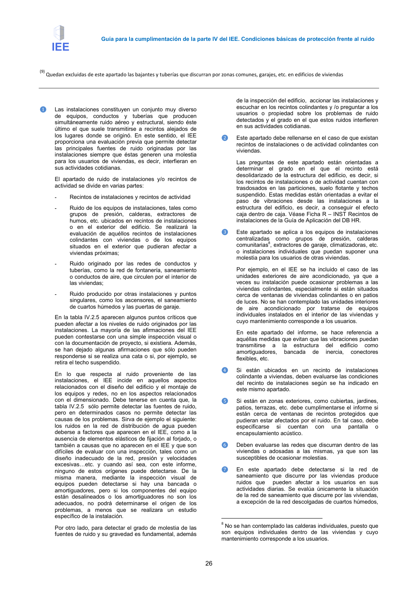

GUIA · Página 26 · versión 2016-11-01
SHA256: 813669d3066c0ff79457d57b80b0512a4fbb248bc5db1f7baf473c369a064738 · página física 26 de 65 · métodos de encabezado
solo si están cotejados.
Formatos: Markdown · JSON de bloques · PDF p. 26 · imagen PNG
Guía para la cumplimentación de la parte IV del IEE. Condiciones básicas de protección frente al ruido
26
(9) Quedan excluidas de este apartado las bajantes y tuberías que discurran por zonas comunes, garajes, etc. en edificios de viviendas
❶
Las instalaciones constituyen un conjunto muy diverso
de equipos, conductos y tuberías que producen
simultáneamente ruido aéreo y estructural, siendo éste
último el que suele transmitirse a recintos alejados de
los lugares donde se originó. En este sentido, el IEE
proporciona una evaluación previa que permite detectar
las principales fuentes de ruido originadas por las
instalaciones siempre que éstas generen una molestia
para los usuarios de viviendas, es decir, interfieran en
sus actividades cotidianas.
El apartado de ruido de instalaciones y/o recintos de
actividad se divide en varias partes:
-
Recintos de instalaciones y recintos de actividad
-
Ruido de los equipos de instalaciones, tales como
grupos de presión, calderas, extractores de
humos, etc. ubicados en recintos de instalaciones
o en el exterior del edificio. Se realizará la
evaluación de aquéllos recintos de instalaciones
colindantes con viviendas o de los equipos
situados en el exterior que pudieran afectar a
viviendas próximas;
-
Ruido originado por las redes de conductos y
tuberías, como la red de fontanería, saneamiento
o conductos de aire, que circulen por el interior de
las viviendas;
-
Ruido producido por otras instalaciones y puntos
singulares, como los ascensores, el saneamiento
de cuartos húmedos y las puertas de garaje.
En la tabla IV.2.5 aparecen algunos puntos críticos que
pueden afectar a los niveles de ruido originados por las
instalaciones. La mayoría de las afirmaciones del IEE
pueden contestarse con una simple inspección visual o
con la documentación de proyecto, si existiera. Además,
se han dejado algunas afirmaciones que sólo pueden
responderse si se realiza una cata o si, por ejemplo, se
retira el techo suspendido.
En lo que respecta al ruido proveniente de las
instalaciones, el IEE incide en aquellos aspectos
relacionados con el diseño del edificio y el montaje de
los equipos y redes, no en los aspectos relacionados
con el dimensionado. Debe tenerse en cuenta que, la
tabla IV.2.5 sólo permite detectar las fuentes de ruido,
pero en determinados casos no permite detectar las
causas de los problemas. Sirva de ejemplo el siguiente:
los ruidos en la red de distribución de agua pueden
deberse a factores que aparecen en el IEE, como a la
ausencia de elementos elásticos de fijación al forjado, o
también a causas que no aparecen en el IEE y que son
difíciles de evaluar con una inspección, tales como un
diseño inadecuado de la red, presión y velocidades
excesivas=etc. y cuando así sea, con este informe,
ninguno de estos orígenes puede detectarse. De la
misma manera, mediante la inspección visual de
equipos pueden detectarse si hay una bancada o
amortiguadores, pero si los componentes del equipo
están desalineados o los amortiguadores no son los
adecuados, no podrá determinarse el origen de los
problemas, a menos que se realizara un estudio
específico de la instalación.
Por otro lado, para detectar el grado de molestia de las
fuentes de ruido y su gravedad es fundamental, además
de la inspección del edificio, accionar las instalaciones y
escuchar en los recintos colindantes y /o preguntar a los
usuarios o propiedad sobre los problemas de ruido
detectados y el grado en el que estos ruidos interfieren
en sus actividades cotidianas.
❷
Este apartado debe rellenarse en el caso de que existan
recintos de instalaciones o de actividad colindantes con
viviendas.
Las preguntas de este apartado están orientadas a
determinar el grado en el que el recinto está
desolidarizado de la estructura del edificio, es decir, si
los recintos de instalaciones o de actividad cuentan con
trasdosados en las particiones, suelo flotante y techos
suspendido. Estas medidas están orientadas a evitar el
paso de vibraciones desde las instalaciones a la
estructura del edificio, es decir, a conseguir el efecto
caja dentro de caja. Véase Ficha R – INST Recintos de
instalaciones de la Guía de Aplicación del DB HR.
❸
Este apartado se aplica a los equipos de instalaciones
centralizadas como grupos de presión, calderas
comunitarias8, extractores de garaje, climatizadoras, etc.
o instalaciones individuales que puedan suponer una
molestia para los usuarios de otras viviendas.
Por ejemplo, en el IEE se ha incluido el caso de las
unidades exteriores de aire acondicionado, ya que a
veces su instalación puede ocasionar problemas a las
viviendas colindantes, especialmente si están situados
cerca de ventanas de viviendas colindantes o en patios
de luces. No se han contemplado las unidades interiores
de
aire
acondicionado
por
tratarse
de
equipos
individuales instalados en el interior de las viviendas y
cuyo mantenimiento corresponde a los usuarios.
En este apartado del informe, se hace referencia a
aquéllas medidas que evitan que las vibraciones puedan
transmitirse
a
la
estructura
del
edificio
como
amortiguadores,
bancada
de
inercia,
conectores
flexibles, etc.
❹
Si están ubicados en un recinto de instalaciones
colindante a viviendas, deben evaluarse las condiciones
del recinto de instalaciones según se ha indicado en
este mismo apartado.
❺
Si están en zonas exteriores, como cubiertas, jardines,
patios, terrazas, etc. debe cumplimentarse el informe si
están cerca de ventanas de recintos protegidos que
pudieran estar afectados por el ruido. En tal caso, debe
especificarse
si
cuentan
con
una
pantalla
o
encapsulamiento acústico.
❻
Deben evaluarse las redes que discurran dentro de las
viviendas o adosadas a las mismas, ya que son las
susceptibles de ocasionar molestias.
❼
En este apartado debe detectarse si la red de
saneamiento que discurre por las viviendas produce
ruidos que pueden afectar a los usuarios en sus
actividades diarias. Se evalúa únicamente la situación
de la red de saneamiento que discurre por las viviendas,
a excepción de la red descolgadas de cuartos húmedos,
8 No se han contemplado las calderas individuales, puesto que
son equipos individuales dentro de las viviendas y cuyo
mantenimiento corresponde a los usuarios.
